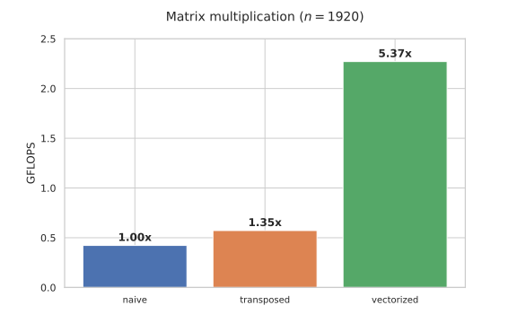
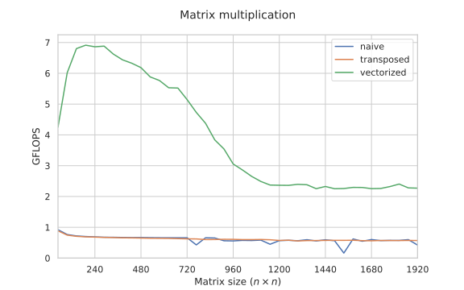
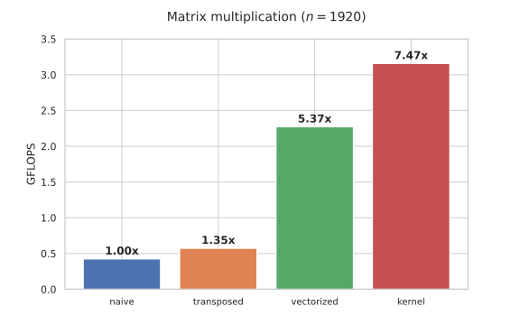
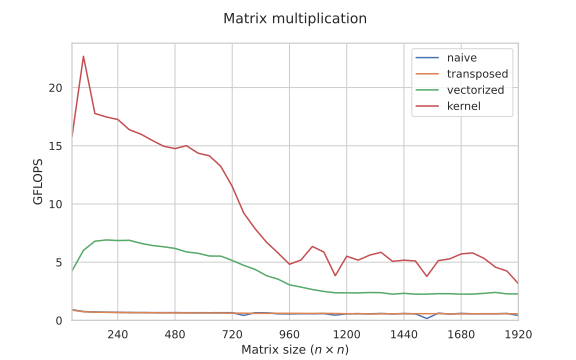
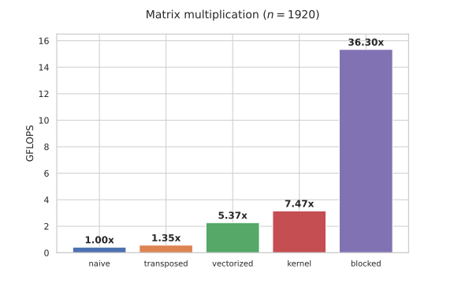
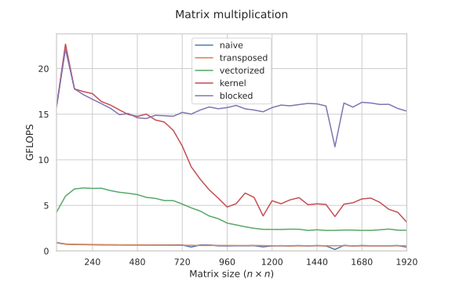
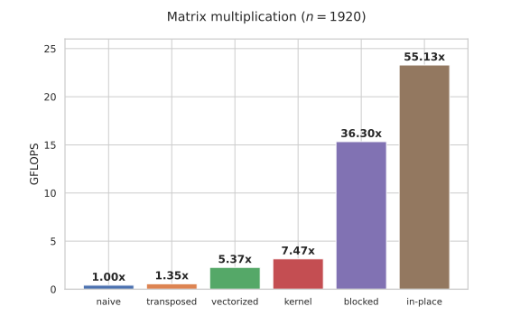
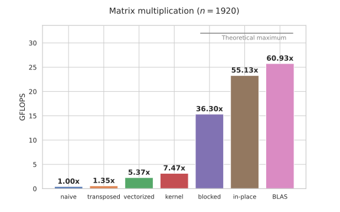

In this case study, we will design and implement several algorithms for matrix multiplication.
We start with the naive “for-for-for” algorithm and incrementally improve it, eventually arriving at a version that is 50 times faster and matches the performance of BLAS libraries while being under 40 lines of C.
All implementations are compiled with GCC 13 and run on a Zen 2 CPU clocked at 2GHz.
#Baseline
The result of multiplying an $l \times n$ matrix $A$ by an $n \times m$ matrix $B$ is defined as an $l \times m$ matrix $C$ such that:
$$ C_{ij} = \sum_{k=1}^{n} A_{ik} \cdot B_{kj} $$For simplicity, we will only consider square matrices, where $l = m = n$.
To implement matrix multiplication, we can simply transfer this definition into code, but instead of two-dimensional arrays (aka matrices), we will be using one-dimensional arrays to be explicit about pointer arithmetic:
void matmul(const float *a, const float *b, float *c, int n) {
for (int i = 0; i < n; i++)
for (int j = 0; j < n; j++)
for (int k = 0; k < n; k++)
c[i * n + j] += a[i * n + k] * b[k * n + j];
}
For reasons that will become apparent later, we will only use matrix sizes that are multiples of $48$ for benchmarking, but the implementations remain correct for all others. We also use 32-bit floats specifically, although all implementations can be easily generalized to other data types and operations.
Compiled with g++ -O3 -march=native -ffast-math -funroll-loops, the naive approach multiplies two matrices of size $n = 1920 = 48 \times 40$ in ~16.7 seconds. To put it in perspective, this is approximately $\frac{1920^3}{16.7 \times 10^9} \approx 0.42$ useful operations per nanosecond (GFLOPS), or roughly 5 CPU cycles per multiplication, which doesn’t look that good yet.
#Transposition
In general, when optimizing an algorithm that processes large quantities of data — and $1920^2 \times 3 \times 4 \approx 42$ MB clearly is a large quantity as it can’t fit into any of the CPU caches — one should always start with memory before optimizing arithmetic, as it is much more likely to be the bottleneck.
The field $C_{ij}$ can be thought of as the dot product of row $i$ of matrix $A$ and column $j$ of matrix $B$. As we increment k in the inner loop above, we are reading the matrix a sequentially, but we are jumping over $n$ elements as we iterate over a column of b, which is not as fast as sequential iteration.
One well-known optimization that tackles this problem is to store matrix $B$ in column-major order — or, alternatively, to transpose it before the matrix multiplication. This requires $O(n^2)$ additional operations but ensures sequential reads in the innermost loop:
void matmul(const float *a, const float *_b, float *c, int n) {
float *b = new float[n * n];
for (int i = 0; i < n; i++)
for (int j = 0; j < n; j++)
b[i * n + j] = _b[j * n + i];
for (int i = 0; i < n; i++)
for (int j = 0; j < n; j++)
for (int k = 0; k < n; k++)
c[i * n + j] += a[i * n + k] * b[j * n + k]; // <- note the indices
}
This code runs in ~12.4s, or about 30% faster.
As we will see in a bit, there are more important benefits to transposing it than just the sequential memory reads.
#Vectorization
Now that all we do is just sequentially read the elements of a and b, multiply them, and add the result to an accumulator variable, we can use SIMD instructions to speed it all up. It is pretty straightforward to implement using GCC vector types — we can memory-align matrix rows, pad them with zeros, and then compute the multiply-sum as we would normally compute any other reduction:
// a vector of 256 / 32 = 8 floats
typedef float vec __attribute__ (( vector_size(32) ));
// a helper function that allocates n vectors and initializes them with zeros
vec* alloc(int n) {
vec* ptr = (vec*) std::aligned_alloc(32, 32 * n);
memset(ptr, 0, 32 * n);
return ptr;
}
void matmul(const float *_a, const float *_b, float *c, int n) {
int nB = (n + 7) / 8; // number of 8-element vectors in a row (rounded up)
vec *a = alloc(n * nB);
vec *b = alloc(n * nB);
// move both matrices to the aligned region
for (int i = 0; i < n; i++) {
for (int j = 0; j < n; j++) {
a[i * nB + j / 8][j % 8] = _a[i * n + j];
b[i * nB + j / 8][j % 8] = _b[j * n + i]; // <- b is still transposed
}
}
for (int i = 0; i < n; i++) {
for (int j = 0; j < n; j++) {
vec s{}; // initialize the accumulator with zeros
// vertical summation
for (int k = 0; k < nB; k++)
s += a[i * nB + k] * b[j * nB + k];
// horizontal summation
for (int k = 0; k < 8; k++)
c[i * n + j] += s[k];
}
}
std::free(a);
std::free(b);
}
The performance for $n = 1920$ is now around 2.3 GFLOPS — or another ~4 times higher compared to the transposed but not vectorized version.

This optimization looks neither too complex nor specific to matrix multiplication. Why can’t the compiler auto-vectorizee the inner loop by itself?
It actually can; the only thing preventing that is the possibility that c overlaps with either a or b. To rule it out, you can communicate to the compiler that you guarantee c is not aliased with anything by adding the __restrict__ keyword to it:
void matmul(const float *a, const float *_b, float * __restrict__ c, int n) {
// ...
}
Both manually and auto-vectorized implementations perform roughly the same.
#Memory efficiency
What is interesting is that the implementation efficiency depends on the problem size.
At first, the performance (defined as the number of useful operations per second) increases as the overhead of the loop management and the horizontal reduction decreases. Then, at around $n=256$, it starts smoothly decreasing as the matrices stop fitting into the cache ($2 \times 256^2 \times 4 = 512$ KB is the size of the L2 cache), and the performance becomes bottlenecked by the memory bandwidth.

It is also interesting that the naive implementation is mostly on par with the non-vectorized transposed version — and even slightly better because it doesn’t need to perform a transposition.
One might think that there would be some general performance gain from doing sequential reads since we are fetching fewer cache lines, but this is not the case: fetching the first column of b indeed takes more time, but the next 15 column reads will be in the same cache lines as the first one, so they will be cached anyway — unless the matrix is so large that it can’t even fit n * cache_line_size bytes into the cache, which is not the case for any practical matrix sizes.
Instead, the performance deteriorates on only a few specific matrix sizes due to the effects of cache associativity: when $n$ is a multiple of a large power of two, we are fetching the addresses of b that all likely map to the same cache line, which reduces the effective cache size. This explains the 30% performance dip for $n = 1920 = 2^7 \times 3 \times 5$, and you can see an even more noticeable one for $1536 = 2^9 \times 3$: it is roughly 3 times slower than for $n=1535$.
So, counterintuitively, transposing the matrix doesn’t help with caching — and in the naive scalar implementation, we are not really bottlenecked by the memory bandwidth anyway. But our vectorized implementation certainly is, so let’s work on its I/O efficiency.
#Register reuse
Using a Python-like notation to refer to submatrices, to compute the cell $C[x][y]$, we need to calculate the dot product of $A[x][:]$ and $B[:][y]$, which requires fetching $2n$ elements, even if we store $B$ in column-major order.
To compute $C[x:x+2][y:y+2]$, a $2 \times 2$ submatrix of $C$, we would need two rows from $A$ and two columns from $B$, namely $A[x:x+2][:]$ and $B[:][y:y+2]$, containing $4n$ elements in total, to update four elements instead of one — which is $\frac{2n / 1}{4n / 4} = 2$ times better in terms of I/O efficiency.
To avoid fetching data more than once, we need to iterate over these rows and columns in parallel and calculate all $2 \times 2$ possible combinations of products. Here is a proof of concept:
void kernel_2x2(int x, int y) {
int c00 = 0, c01 = 0, c10 = 0, c11 = 0;
for (int k = 0; k < n; k++) {
// read rows
int a0 = a[x][k];
int a1 = a[x + 1][k];
// read columns
int b0 = b[k][y];
int b1 = b[k][y + 1];
// update all combinations
c00 += a0 * b0;
c01 += a0 * b1;
c10 += a1 * b0;
c11 += a1 * b1;
}
// write the results to C
c[x][y] = c00;
c[x][y + 1] = c01;
c[x + 1][y] = c10;
c[x + 1][y + 1] = c11;
}
We can now simply call this kernel on all 2x2 submatrices of $C$, but we won’t bother evaluating it: although this algorithm is better in terms of I/O operations, it would still not beat our SIMD-based implementation. Instead, we will extend this approach and develop a similar vectorized kernel right away.
#Designing the kernel
Instead of designing a kernel that computes an $h \times w$ submatrix of $C$ from scratch, we will declare a function that updates it using columns from $l$ to $r$ of $A$ and rows from $l$ to $r$ of $B$. For now, this seems like an over-generalization, but this function interface will prove useful later.
To determine $h$ and $w$, we have several performance considerations:
- In general, to compute an $h \times w$ submatrix, we need to fetch $2 \cdot n \cdot (h + w)$ elements. To optimize the I/O efficiency, we want the $\frac{h \cdot w}{h + w}$ ratio to be high, which is achieved with large and square-ish submatrices.
- We want to use the FMA (“fused multiply-add”) instruction available on all modern x86 architectures. As you can guess from the name, it performs the
c += a * boperation — which is the core of a dot product — on 8-element vectors in one go, which saves us from executing vector multiplication and addition separately. - To achieve better utilization of this instruction, we want to make use of instruction-level parallelism. On Zen 2, the
fmainstruction has a latency of 5 and a throughput of 2, meaning that we need to concurrently execute at least $5 \times 2 = 10$ of them to saturate its execution ports. - We want to avoid register spill (move data to and from registers more than necessary), and we only have $16$ logical vector registers that we can use as accumulators (minus those that we need to hold temporary values).
For these reasons, we settle on a $6 \times 16$ kernel. This way, we process $96$ elements at once that are stored in $6 \times 2 = 12$ vector registers. To update them efficiently, we use the following procedure:
// update 6x16 submatrix C[x:x+6][y:y+16]
// using A[x:x+6][l:r] and B[l:r][y:y+16]
void kernel(float *a, vec *b, vec *c, int x, int y, int l, int r, int n) {
vec t[6][2]{}; // will be zero-filled and stored in ymm registers
for (int k = l; k < r; k++) {
for (int i = 0; i < 6; i++) {
// broadcast a[x + i][k] into a register
vec alpha = vec{} + a[(x + i) * n + k]; // converts to a broadcast
// multiply b[k][y:y+16] by it and update t[i][0] and t[i][1]
for (int j = 0; j < 2; j++)
t[i][j] += alpha * b[(k * n + y) / 8 + j]; // converts to an fma
}
}
// write the results back to C
for (int i = 0; i < 6; i++)
for (int j = 0; j < 2; j++)
c[((x + i) * n + y) / 8 + j] += t[i][j];
}
We need t so that the compiler stores these elements in vector registers. We could just update their final destinations in c, but, unfortunately, the compiler re-writes them back to memory, causing a slowdown (wrapping everything in __restrict__ keywords doesn’t help).
After unrolling these loops and hoisting b out of the i loop (b[(k * n + y) / 8 + j] does not depend on i and can be loaded once and reused in all 6 iterations), the compiler generates something more similar to this:
for (int k = l; k < r; k++) {
__m256 b0 = _mm256_load_ps((__m256*) &b[k * n + y];
__m256 b1 = _mm256_load_ps((__m256*) &b[k * n + y + 8];
__m256 a0 = _mm256_broadcast_ps((__m128*) &a[x * n + k]);
t00 = _mm256_fmadd_ps(a0, b0, t00);
t01 = _mm256_fmadd_ps(a0, b1, t01);
__m256 a1 = _mm256_broadcast_ps((__m128*) &a[(x + 1) * n + k]);
t10 = _mm256_fmadd_ps(a1, b0, t10);
t11 = _mm256_fmadd_ps(a1, b1, t11);
// ...
}
We are using $12+3=15$ vector registers and a total of $6 \times 3 + 2 = 20$ instructions to perform $16 \times 6 = 96$ updates. Assuming that there are no other bottleneks, we should be hitting the throughput of _mm256_fmadd_ps.
Note that this kernel is architecture-specific. If we didn’t have fma, or if its throughput/latency were different, or if the SIMD width was 128 or 512 bits, we would have made different design choices. Multi-platform BLAS implementations ship many kernels, each written in assembly by hand and optimized for a particular architecture.
The rest of the implementation is straightforward. Similar to the previous vectorized implementation, we just move the matrices to memory-aligned arrays and call the kernel instead of the innermost loop:
void matmul(const float *_a, const float *_b, float *_c, int n) {
// to simplify the implementation, we pad the height and width
// so that they are divisible by 6 and 16 respectively
int nx = (n + 5) / 6 * 6;
int ny = (n + 15) / 16 * 16;
float *a = alloc(nx * ny);
float *b = alloc(nx * ny);
float *c = alloc(nx * ny);
for (int i = 0; i < n; i++) {
memcpy(&a[i * ny], &_a[i * n], 4 * n);
memcpy(&b[i * ny], &_b[i * n], 4 * n); // we don't need to transpose b this time
}
for (int x = 0; x < nx; x += 6)
for (int y = 0; y < ny; y += 16)
kernel(a, (vec*) b, (vec*) c, x, y, 0, n, ny);
for (int i = 0; i < n; i++)
memcpy(&_c[i * n], &c[i * ny], 4 * n);
std::free(a);
std::free(b);
std::free(c);
}
This improves the benchmark performance, but only by ~40%:

The speedup is much higher (2-3x) on smaller arrays, indicating that there is still a memory bandwidth problem:

Now, if you’ve read the section on cache-oblivious algorithms, you know that one universal solution to these types of things is to split all matrices into four parts, perform eight recursive block matrix multiplications, and carefully combine the results together. This solution is okay in practice, but there is some overhead to recursion, and it also doesn’t allow us to fine-tune the algorithm, so instead, we will follow a different, simpler approach.
#Blocking
The cache-aware alternative to the divide-and-conquer trick is cache blocking: splitting the data into blocks that can fit into the cache and processing them one by one. If we have more than one layer of cache, we can do hierarchical blocking: we first select a block of data that fits into the L3 cache, then we split it into blocks that fit into the L2 cache, and so on. This approach requires knowing the cache sizes in advance, but it is usually easier to implement and also faster in practice.
Cache blocking is less trivial to do with matrices than with arrays, but the general idea is this:
- Select a submatrix of $B$ that fits into the L3 cache (say, a subset of its columns).
- Select a submatrix of $A$ that fits into the L2 cache (say, a subset of its rows).
- Select a submatrix of the previously selected submatrix of $B$ (a subset of its rows) that fits into the L1 cache.
- Update the relevant submatrix of $C$ using the kernel.
Here is a good visualization by Jukka Suomela (it features many different approaches; you are interested in the last one).
Note that the decision to start this process with matrix $B$ is not arbitrary. During the kernel execution, we are reading the elements of $A$ much slower than the elements of $B$: we fetch and broadcast just one element of $A$ and then multiply it with $16$ elements of $B$. Therefore, we want $B$ to be in the L1 cache while $A$ can stay in the L2 cache and not the other way around.
This sounds complicated, but we can implement it with just three more outer for loops, which are collectively called macro-kernel (and the highly optimized low-level function that updates a 6x16 submatrix is called micro-kernel):
const int s3 = 64; // how many columns of B to select
const int s2 = 120; // how many rows of A to select
const int s1 = 240; // how many rows of B to select
for (int i3 = 0; i3 < ny; i3 += s3)
// now we are working with b[:][i3:i3+s3]
for (int i2 = 0; i2 < nx; i2 += s2)
// now we are working with a[i2:i2+s2][:]
for (int i1 = 0; i1 < ny; i1 += s1)
// now we are working with b[i1:i1+s1][i3:i3+s3]
// and we need to update c[i2:i2+s2][i3:i3+s3] with [l:r] = [i1:i1+s1]
for (int x = i2; x < std::min(i2 + s2, nx); x += 6)
for (int y = i3; y < std::min(i3 + s3, ny); y += 16)
kernel(a, (vec*) b, (vec*) c, x, y, i1, std::min(i1 + s1, n), ny);
Cache blocking completely removes the memory bottleneck:

The performance is no longer (significantly) affected by the problem size:

Notice that the dip at $1536$ is still there: cache associativity still affects the performance. To mitigate this, we can adjust the step constants or insert holes into the layout, but we will not bother doing that for now.
#Optimization
To approach closer to the performance limit, we need a few more optimizations:
- Remove memory allocation and operate directly on the arrays that are passed to the function. Note that we don’t need to do anything with
aas we are reading just one element at a time, and we can use an unalignedstoreforcas we only use it rarely, so our only concern is readingb. - Get rid of the
std::minso that the size parameters are (mostly) constant and can be embedded into the machine code by the compiler (which also lets it unroll the micro-kernel loop more efficiently and avoid runtime checks). - Rewrite the micro-kernel by hand using 12 vector variables (the compiler seems to struggle with keeping them in registers and writes them first to a temporary memory location and only then to $C$).
These optimizations are straightforward but quite tedious to implement, so we are not going to list the code here in the article. It also requires some more work to effectively support “weird” matrix sizes, which is why we only run benchmarks for sizes that are multiple of $48 = \frac{6 \cdot 16}{\gcd(6, 16)}$.
These individually small improvements compound and result in another 50% improvement:

We are actually not that far from the theoretical performance limit — which can be calculated as the SIMD width times the fma instruction throughput times the clock frequency:
It is more representative to compare against some practical library, such as OpenBLAS. The laziest way to do it is to simply invoke matrix multiplication from NumPy. There may be some minor overhead due to Python, but it ends up reaching 80% of the theoretical limit, which seems plausible (a 20% overhead is okay: matrix multiplication is not the only thing that CPUs are made for).

We’ve reached ~93% of BLAS performance and ~75% of the theoretical performance limit, which is really great for what is essentially just 40 lines of C.
Interestingly, the whole thing can be rolled into just one deeply nested for loop with a BLAS level of performance (assuming that we’re in 2050 and using GCC version 35, which finally stopped screwing up with register spilling):
for (int i3 = 0; i3 < n; i3 += s3)
for (int i2 = 0; i2 < n; i2 += s2)
for (int i1 = 0; i1 < n; i1 += s1)
for (int x = i2; x < i2 + s2; x += 6)
for (int y = i3; y < i3 + s3; y += 16)
for (int k = i1; k < i1 + s1; k++)
for (int i = 0; i < 6; i++)
for (int j = 0; j < 2; j++)
c[x * n / 8 + i * n / 8 + y / 8 + j]
+= (vec{} + a[x * n + i * n + k])
* b[n / 8 * k + y / 8 + j];
There is also an approach that performs asymptotically fewer arithmetic operations — the Strassen algorithm — but it has a large constant factor, and it is only efficient for very large matrices ($n > 4000$), where we typically have to use either multiprocessing or some approximate dimensionality-reducing methods anyway.
#Generalizations
FMA also supports 64-bit floating-point numbers, but it does not support integers: you need to perform addition and multiplication separately, which results in decreased performance. If you can guarantee that all intermediate results can be represented exactly as 32- or 64-bit floating-point numbers (which is often the case), it may be faster to just convert them to and from floats.
This approach can be also applied to some similar-looking computations. One example is the “min-plus matrix multiplication” defined as:
$$ (A \circ B)_{ij} = \min_{1 \le k \le n} (A_{ik} + B_{kj}) $$It is also known as the “distance product” due to its graph interpretation: when applied to itself $(D \circ D)$, the result is the matrix of shortest paths of length two between all pairs of vertices in a fully-connected weighted graph specified by the edge weight matrix $D$.
A cool thing about the distance product is that if we iterate the process and calculate
$$ \begin{aligned} D_2 &= D \circ D, \\ D_4 &= D_2 \circ D_2, \\ D_8 &= D_4 \circ D_4, \\ &\ldots \end{aligned} $$…we can find all-pairs shortest paths in $O(\log n)$ steps:
for (int l = 0; l < logn; l++)
for (int i = 0; i < n; i++)
for (int j = 0; j < n; j++)
for (int k = 0; k < n; k++)
d[i][j] = min(d[i][j], d[i][k] + d[k][j]);
This requires $O(n^3 \log n)$ operations. If we do these two-edge relaxations in a particular order, we can do it with just one pass, which is known as the Floyd-Warshall algorithm:
for (int k = 0; k < n; k++)
for (int i = 0; i < n; i++)
for (int j = 0; j < n; j++)
d[i][j] = min(d[i][j], d[i][k] + d[k][j]);
Interestingly, similarly vectorizing the distance product and executing it $O(\log n)$ times (or possibly fewer) in $O(n^3 \log n)$ total operations is faster than naively executing the Floyd-Warshall algorithm in $O(n^3)$ operations, although not by a lot.
As an exercise, try to speed up this “for-for-for” computation. It is harder to do than in the matrix multiplication case because now there is a logical dependency between the iterations, and you need to perform updates in a particular order, but it is still possible to design a similar kernel and a block iteration order that achieves a 30-50x total speedup.
#Acknowledgements
The final algorithm was originally designed by Kazushige Goto, and it is the basis of GotoBLAS and OpenBLAS. The author himself describes it in more detail in “Anatomy of High-Performance Matrix Multiplication”.
The exposition style is inspired by the “Programming Parallel Computers” course by Jukka Suomela, which features a similar case study on speeding up the distance product.